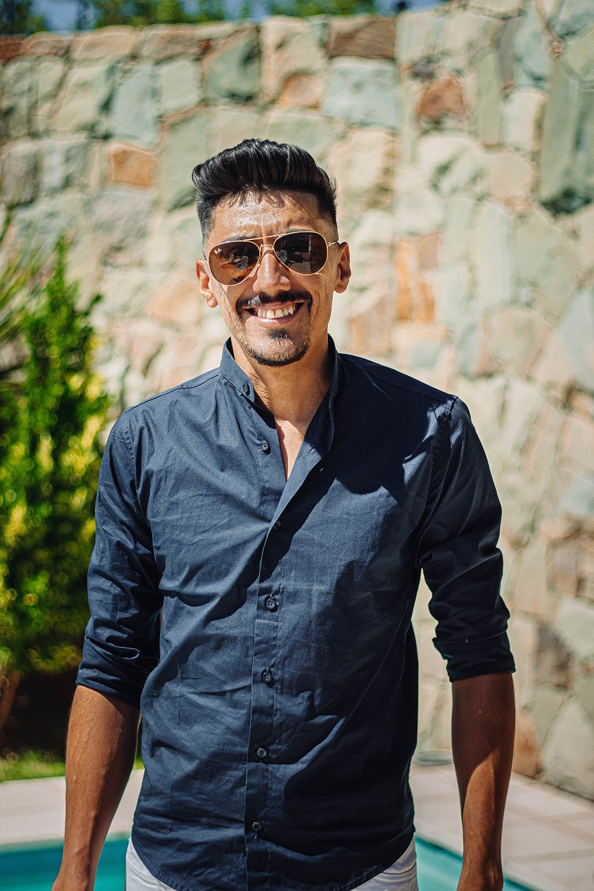

Apasionado por el aprendizaje continuo, el crecimiento personal y ayudar a otros. Emprendedor, siempre manteniendose en la busqueda de nuevas ideas que aporten soluciones y mejoras a la sociedad. Buena predisposicion para trabajar en equipo estableciendo relaciones laborales con empatia y respeto, proactivo y comprometido a la hora de buscar soluciones que nos permitan cumplir con los objetivos propuestos en tiempo y forma. Gran habilidad para escuchar opiniones y criticas constructivas de miembros del equipo de trabajo que conlleven a un crecimiento profesional y el logro de las metas de manera eficaz y eficiente.
Para finalizar los motivos por los cuales comence a estudiar esta carrera nuevamente es por que hace años comence a estuadiarla y por cuestiones personales no pude finalizar los estudios, segundo por que me gusta; otro de los motivos es por que hace un par de años que vengo interiorizandome en el mundo cripto y es una de las bases para poder entenderlo con mas profundidad; tambien es una carrera con mucha demanda laboral y con una gran escalabilidad. Es un mundo lleno de aprendizaje nuevo que no para de crecer y la comunidad que se encuentra detras es muy cooperativa y colaborativa.
En cuanto a lo que espero al finalizar la carrera en principio es poder desarrollar una idea de proyecto start up que tengo hace varios años en mente y terminar la carrera me ayudaria a concretarla, otro de los objetivos que busco tambien es conseguir trabajar para una empresa, start up en lo posible, que me permita crecer profesionalmente y con la cual me comprometo a cumplir con los objetivos propuestos para facilitar el crecimiento de la misma; en tercer lugar lograr ser un gran desarrollador, ayudar a la comunidad a crecer y crear soluciones que otros puedan utilizar.